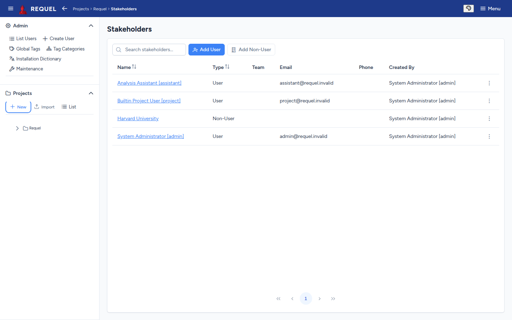
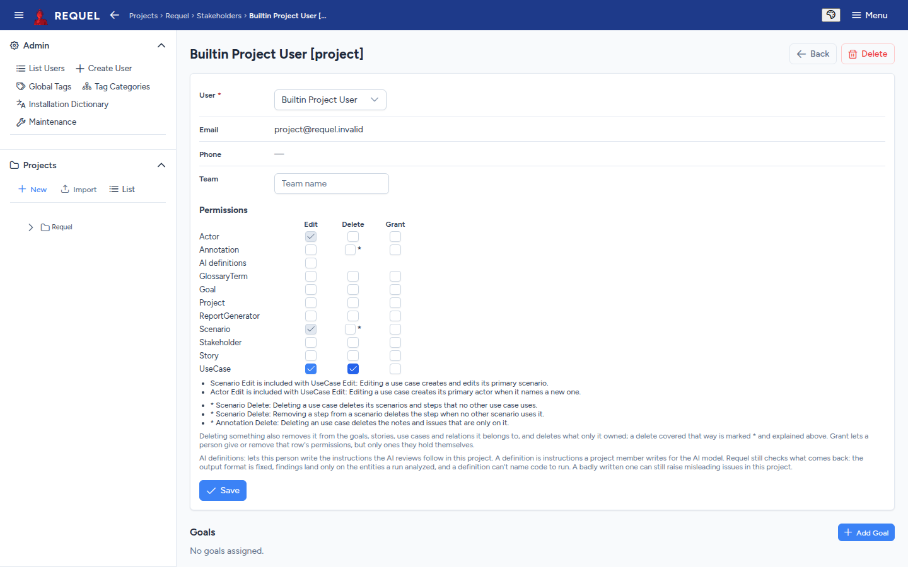

Stakeholders
Who has a say in the requirements, and what each person may change.
Users and non-users
A project’s Stakeholders page lists everyone with a stake in it.
- Add User adds a Requel user. They can then open the project, and their permissions decide what they can change.
- Add Non-User records a person or group who doesn’t log in, such as a customer or a regulator, with a name and description, so goals can be tied to them.
Either kind can be linked to the goals they care about, from the stakeholder’s Goals section. The automated assistants appear here as users too, because the issues they raise are recorded as theirs.

Permissions
Open a user stakeholder to set their team and permissions. Each row is a kind of item; the columns are:
- Edit
- Create and change items of that kind.
- Delete
- Remove them.
- Grant
- Give or take away that row’s permissions for other stakeholders, but only the ones the granter holds.
Some permissions come with others, and the editor shows it as you tick:
- A permission that is included with one you ticked is shown ticked and greyed, with a line saying why. Editing a use case creates its primary scenario and actor, so UseCase Edit brings Scenario Edit and Actor Edit.
- A delete marked * happens as part of another one. Deleting a use case deletes the scenarios, steps, notes and issues that only it owns; the notes under the grid say exactly what.

AI definitions lets the person change the instructions the AI review follows in this project.
The person who creates or imports a project gets every permission. Give
others only what they need; with Grant they can pass on what they hold.